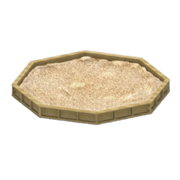

SandBox

Hey, the name's SiBu. A tech nerd navigating through teaching
herself web development. Ever since I can remember, I've always been
drawn to creating:
- dabbled in my own series of stickmen comics
- discovered writing without visuals and published
a few wattpad stories (don't bother searching them up, I buried
those where no one can find them)
- discovered music: played instruments and even composed some songs of my own
(that's just a narcissistic way of saying I sang the alphabet in the style of negro-gospel,
pasting on a tune I had probably picked up from a radio.)
Then I found coding, the perfect scratch to satisfy my
persistant itch: creating algorithms, frameworks, layouts from
my own logic, my own creativity and seeing it come into
fruition.
This website is my creative canvas. My space to watch an idea
come to life - growing from words on a screen to a
fully-realised product. Each aspect of the page is the final,
perfected version obtained from a lot of trail-and-error, and
natural enhancement of my skills. You can see the creation and
update logs by clicking the little shovel in the bottom-right
corner of the page. (pretty cool, huh?)